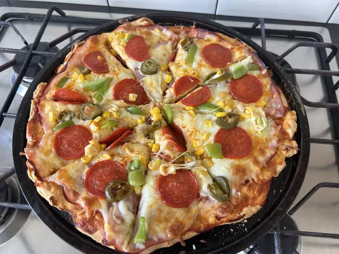

No-Yeast Pizza Dough Ingredients
Flour: This yeastless pizza crust starts with all-purpose flour.
Baking powder: Without yeast, the pizza dough needs baking powder to rise.
Salt: A pinch of salt enhances the flavor and strengthens the gluten.
Milk: You\'ll need ½ cup of fat-free milk.
live oil: Olive oil locks in moisture and keeps the dough from drying out.
How to Make No-Yeast Pizza Dough
Mix the dry ingredients, then stir in the wet ingredients until a dough forms.
Turn out the dough and knead.
Shape the dough into a ball and let rise.
Roll the dough out into a circle.